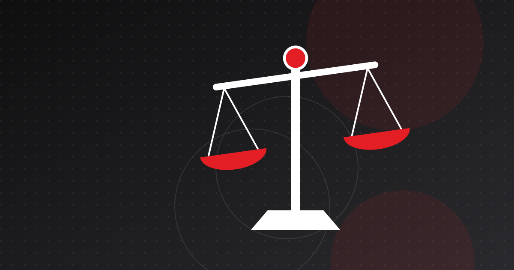

Paymee: ملف رائدة تونسية في الدفع الإلكتروني تحت الضغط
ساعدت Paymee التجار التونسيين على قبول الدفع بالبطاقة عبر الإنترنت وعند الاستلام. لكن تجميدًا لأموالها عام 2023 في إطار مكافحة غسل الأموال، رُبط لاحقًا بمنطقة رمادية تنظيمية، عرّض الشركة للخطر.

أبرز النقاط
- بنت Paymee، التي أسسها مروان عمامو في 2017–2018 تقريبًا، إحدى أولى بوابات الدفع الإلكتروني في تونس، إلى جانب روابط الدفع ورموز QR والدفع بالبطاقة عند الاستلام.
- جمعت جولة تمويل بمبلغ من ست خانات قادتها P1 Ventures في جويلية 2022.
- في فيفري 2023، أدى تصريح بالاشتباه إلى اللجنة التونسية للتحاليل المالية إلى تجميد أموال Paymee؛ وخلص تفقد للبنك المركزي التونسي لاحقًا إلى أنها تعمل بصفة ميسّر دفع، لا مؤسسة دفع غير مرخّصة.
- ساهمت القضية في كشف غياب القواعد المنظمة لميسّري الدفع، وهو ما عالجه البنك المركزي التونسي في إرشادات جانفي 2024.
كانت Paymee من أوائل الشركات الناشئة التونسية التي قدّمت للتجار بوابة دفع إلكتروني. لكن قصتها تحمل أيضًا تحذيرًا: ففي عام 2023، أدى تصريح بالاشتباه في غسل الأموال إلى تجميد أموالها وأموال مؤسسها، في قضية تمحورت حول الطريقة التي نظّمت بها تونس، أو أخفقت في تنظيم، نشاط ميسّري الدفع. ويتناول هذا الملف الشركة ومنتجاتها والنزاع.
Paymee في لمحة
- المؤسس والرئيس التنفيذي: مروان عمامو، مهندس إعلامية تونسي درس في المعهد العالي للإعلامية بأريانة (ISI Ariana) وعمل في فرنسا قبل أن يعود إلى تونس.
- تاريخ التأسيس: تختلف المصادر. فـ We Are Tech Africa تذكر عام 2017، وWamda تذكر عام 2018، في حين يفيد ملف نشرته Tunisian Monitor عام 2018 بأن الشركة انطلقت في باريس في مارس 2018.
- علامة "شركة ناشئة": مُنحت في ماي 2019 في إطار قانون الشركات الناشئة (Startup Act) التونسي.
- التمويل: جولة بمبلغ من ست خانات قادتها P1 Ventures في جويلية 2022، دون الكشف عن قيمتها. وكانت Paymee قد فازت قبل ذلك بالجائزة الكبرى للموسم الثاني من مسابقة El Pitch.
- التكريم: جائزة الابتكار في التكنولوجيا المالية من رئاسة الحكومة خلال قمة الفرنكوفونية التي احتضنتها تونس في نوفمبر 2022، وفقًا للشركة.
المنتجات
انطلقت Paymee عام 2018 تطبيقًا للهاتف الجوال للدفع للتجار وإرسال الأموال، مع بوابة لمواقع التجارة الإلكترونية. ثم ركّزت على المؤسسات:
- بوابة الدفع: قبول البطاقات البنكية التونسية والدولية وبطاقات e-Dinar التابعة للبريد التونسي، عبر إضافات برمجية أو واجهة برمجة تطبيقات (API). وتمر المدفوعات عبر المنصة الآمنة لشركة النقديات التونسية (Société Monétique Tunisie - SMT).
- Paylink: روابط دفع للمؤسسات التي لا تملك موقعًا إلكترونيًا، للفواتير والطلبات عبر الهاتف أو شبكات التواصل الاجتماعي والعرابين.
- الدفع برمز QR: رمز QR ثابت بمبلغ قابل للتعديل، قُدّم عام 2022 بديلًا عن أجهزة الدفع بالبطاقة.
- Paymee On Delivery: يُنشئ عمال التوصيل رمز QR لكل طرد، فيمسحه العميل ويدفع بالبطاقة عند باب منزله. وذُكرت Aramex عميلًا في مجال الخدمات اللوجستية عام 2022.
وفي منتصف عام 2022، أعلنت Paymee أنها تملك أكثر من 250 حسابًا للمؤسسات وأكثر من 100 000 معاملة منجزة. وتستهدف هذه المنتجات نقطة الضعف الجوهرية في التجارة الإلكترونية التونسية، وهي هيمنة الدفع عند الاستلام، التي يتناولها دليلنا حول الدفع في التجارة الإلكترونية في تونس.
تجميد عام 2023
وفقًا للبيان الصحفي الصادر عن Paymee في فيفري 2024 وما أوردته Webdo:
- 24 فيفري 2023: تلقّت اللجنة التونسية للتحاليل المالية (CTAF)، وهي وحدة الاستخبارات المالية في تونس، تصريحًا بالاشتباه من مصدر مجهول، يتهم Paymee بممارسة نشاط مؤسسة دفع دون ترخيص وبغسل الأموال.
- جُمّدت أموال Paymee والأموال الشخصية لممثلها القانوني، وفُتحت قضية جزائية.
- أكتوبر 2023: خلص تقرير تفقد أجراه البنك المركزي التونسي إلى أن Paymee لم تكن تعمل بصفة مؤسسة دفع، بل بصفة ميسّر دفع، وهي فئة قالت الشركة إنها لم تكن منظمة بالكامل بعد.
- جانفي 2024: نشر البنك المركزي التونسي إرشادات بشأن تيسير الدفع، تُلزم الميسّرين بالعمل بالشراكة مع بنك أو مؤسسة مرخّصة.
- فيفري 2024: كانت القضية لا تزال مفتوحة بعد 11 شهرًا. وأعلنت Paymee أن أكثر من 750 عميلًا تضرروا، وأنها عالجت نحو 90 مليون دينار، وأن نشاطها مشلول، وأنها تواجه خطر الإغلاق الوشيك.
هذه رواية الشركة وما أوردته الصحافة؛ ولم نطّلع على ملفات السلطات.
ما الذي حدث بعد ذلك
السجل العلني بعد مطلع عام 2024 شحيح. فقد أعلنت Paymee حصولها على علامة المشروع المبتكر في الجزائر في مارس 2024. ولا يزال موقعها الإلكتروني متاحًا، لكن مدونتها لا تتضمن أي مستجدات بشأن القضية بعد فيفري 2024. وظلت أدلة التجار حول مزوّدي خدمات الدفع التونسيين المنشورة في عامي 2025 و2026 تصف حسابات Paymee بأنها مجمّدة، أو الشركة بأنها تواجه صعوبات تنظيمية جدية. ولم نعثر على أي إعلان رسمي بإغلاق القضية أو رفع التجميد عن الأموال. وينبغي للقراء اعتبار الوضع الحالي لـ Paymee غير مؤكد.
دروس لشركات التكنولوجيا المالية التونسية
تُجسّد قضية Paymee المخاطر التنظيمية في قطاع الدفع التونسي. وبعض الدروس عملية:
- اعرف فئتك. فالحد الفاصل بين ميسّر الدفع ومؤسسة الدفع غير المرخّصة هو ما يحدد ما إذا كنت تبتكر أم ترتكب مخالفة. ويعرض شرحنا حول مؤسسات الدفع في تونس هذه الفئات.
- وثّق تدفقات الأموال. فالميسّرون الذين يتعاملون مع أموال التجار معرّضون لتدقيق مكافحة غسل الأموال. راجع مقالنا حول قواعد مكافحة غسل الأموال والتحقق الإلكتروني.
- استعدّ لاحتمال تجميد الحسابات. يوقف التجميد فورًا تحويل المبالغ إلى التجار، الذين يتحملون بدورهم الضرر.
وقد منحت إرشادات البنك المركزي التونسي الصادرة في جانفي 2024، التي تقول Paymee إنها أسهمت في إثرائها، نموذجَ تيسير الدفع أساسًا أوضح. وتقدّم كل من Konnect وFlouci نفسيهما اليوم بوصفهما ميسّري دفع مرخّصًا لهما من البنك المركزي التونسي. وتُظهر تجربة Paymee كلفة العمل قبل وجود القواعد.
شركات وردت في المقال
أسئلة شائعة
ما هي Paymee؟
Paymee شركة تونسية في مجال التكنولوجيا المالية أسسها مروان عمامو، تقدّم للتجار بوابة دفع إلكتروني وروابط دفع والدفع برمز QR والدفع بالبطاقة عند الاستلام.
لماذا جُمّدت أموال Paymee؟
في فيفري 2023، تلقّت اللجنة التونسية للتحاليل المالية تصريحًا بالاشتباه يتهم Paymee بممارسة نشاط مؤسسة دفع دون ترخيص وبغسل الأموال. وخلص تفقد أجراه البنك المركزي التونسي في أكتوبر 2023 إلى أنها تعمل بصفة ميسّر دفع، لكن القضية كانت لا تزال مفتوحة في فيفري 2024.
هل لا تزال Paymee تعمل؟
وضعها غير واضح. فقد حذّرت Paymee في فيفري 2024 من أنها مهددة بالإغلاق، وظلت أدلة الدفع الصادرة في عامي 2025 و2026 تصف حساباتها بأنها مجمّدة. ولم نعثر على أي تأكيد رسمي بتسوية القضية.
من استثمر في Paymee؟
قادت P1 Ventures جولة تمويل بمبلغ من ست خانات في Paymee في جويلية 2022. ولم يُكشف عن المبلغ بدقة.
المصادر
- Tunisia's Paymee raises six-figure round led by P1 Ventures — Wamda
- En Tunisie, Paymee fournit des passerelles de paiement en ligne pour les entreprises — We Are Tech Africa
- Pionnier des solutions de paiement en ligne en Tunisie face aux défis — Paymee
- Tunisie : Enquête, gel de fonds, la startup Paymee en péril ! — Webdo
- Paymee, revolution in mobile and online payment for Tunisian economy — Tunisian Monitor
- Paymee On Delivery — Paymee
هذا المقال لأغراض إعلامية فقط ولا يُعدّ استشارة قانونية أو مالية أو استثمارية. الأرقام مؤرخة وموثّقة المصادر؛ يُرجى الرجوع إلى أحدث المنشورات الرسمية قبل اتخاذ أي قرار.